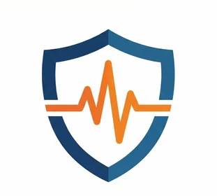

Deprem, hava ve afet uyarıları tek uygulamada
Son depremleri, bulunduğunuz ilin resmî hava ve afet uyarılarını takip edin; deprem sonrası sevdiklerinizin güvende olup olmadığını öğrenin.
Türkiye ve çevresindeki depremleri gerçek zamanlı olarak takip edin.
Deprem dalgaları ulaşmadan önce saniyeler kazandırabilecek bir erken uyarı üzerinde çalışıyoruz; bu süre koşullara bağlıdır ve garanti edilmez.
Orman yangını, sel, heyelan ve diğer afet risklerini takip edin.
Detaylı hava durumu bilgisi ve meteorolojik uyarılar.
Deprem sonrası arkadaşlarınızın durumunu takip edin.
Önemli deprem ve afet uyarıları için anlık bildirimler.
Türkiye ve çevresindeki son depremleri, il il hava durumunu, rüzgârı, yağışı, meteorolojik uyarıları ve yangın riskini canlı olarak izleyin.
Yükleniyor…
M 3'ten küçük M 3–4 M 4–5 M 5 ve üzeri Birden çok deprem (içindeki sayı adettir). Kandilli, EMSC ve USGS verileri birleştirilir; aynı deprem tek kayıt olarak gösterilir.
085+ km/sa Akan çizgiler rüzgârın yönünü, zemin rengi hızını gösterir. Bir noktadaki değer için haritaya dokunun.
Meteoroloji radarlarının son yağış görüntüsü. Renk koyulaştıkça yağış şiddetlenir; radar kapsamı dışındaki bölgeler boş görünür.
−15°35° İller il merkezindeki anlık sıcaklığa göre boyanır. 3 günlük tahmin için ilin üzerine gelin veya dokunun.
Sarı uyarı Turuncu uyarı Kırmızı uyarı. Meteoroloji Genel Müdürlüğü'nün uyarı verdiği iller boyanır. Ayrıntı için ilin üzerine gelin veya dokunun.
Bugünkü sıcak nokta Dünkü sıcak nokta Sanayi kaynağı. Sıcak noktalar yangın, anız yakma veya sanayi tesisi olabilir; her nokta yangın değildir.
Orman yangını tehlikesi (bugün): Düşük Orta Yüksek Çok yüksek Aşırı. Hava koşullarına göre yangın çıkma ve yayılma riskidir; yangın olduğu anlamına gelmez. Kaynak: EFFIS (Copernicus).
Harita bilgilendirme amaçlıdır ve resmî kurum uyarılarının yerine geçmez.
Hayır, ErkenUyar bağımsız bir uygulamadır ve resmî bir kurum uygulaması değildir. Uygulama, resmî kanalların (AFAD, Kandilli Rasathanesi) yerine geçmez. Acil durumlarda mutlaka 112 Acil Çağrı Merkezi'ni arayın ve resmî kurumların açıklamalarını takip edin.
Bildirimlerin gecikmesi veya gelmemesi birkaç nedenden kaynaklanabilir: ağ gecikmesi, cihaz izinleri, arka plan kısıtları, veri kaynağı gecikmesi veya kullanıcı ayarları. Uyarılar olasılıksal niteliktedir ve her koşulda çalışacağına dair garanti verilemez. Uygulama ayarlarınızı kontrol ederek bildirim izinlerini aktif tutmanız önerilir.
Konum izni zorunlu değildir ancak uyarıların bölgenize göre özelleşmesi için önerilir. Kullanıcı isterse konum iznini cihaz ayarlarından kapatabilir. Minimum veri prensibi gereği, yalnızca gerekli veriler toplanır.
Uygulama hafif ve optimize edilmiştir. Arka planda gereksiz çalışma yapmaz ve pil tüketimi minimum seviyededir. Bildirim tercihlerinizi ayarlayarak pil kullanımını daha da kontrol edebilirsiniz.
Deprem verileri Kandilli Rasathanesi, EMSC ve USGS gibi kamuya açık kaynaklardan, meteorolojik uyarılar Meteoroloji Genel Müdürlüğü (MGM) duyurularından, hava verileri Open-Meteo'dan alınır. Kaynaklar değişebilir. Resmî ve nihai bilgiler için AFAD ve Kandilli Rasathanesi gibi yetkili kurumların doğrudan yayımladığı açıklamalar esas alınmalıdır.
Arkadaş takibi özelliği kullanıcı onayı ile çalışır. Tüm paylaşımlar kullanıcı kontrolündedir ve istenirse kapatılabilir. Acil durumlarda hızlı durum paylaşımı için tasarlanmıştır. Gizlilik politikamızda detaylı bilgi bulabilirsiniz.
Hata bildirimi ve önerileriniz için Destek sayfasına bakabilir veya erkenuyardestek@gmail.com adresine e-posta gönderebilirsiniz. Geri bildirimleriniz bizim için değerlidir.
Deprem, hava ve afet uyarıları
ErkenUyar; Türkiye ve çevresindeki depremleri, bulunduğunuz ilin hava ve afet uyarılarını ve yakınlarınızın güvende olup olmadığını tek yerde gösteren bir mobil uygulamadır.
Önemli: Uygulama resmî bir kamu kurumu değildir, AFAD, Kandilli Rasathanesi veya benzeri kuruluşların yerine geçmez. Sunulan bilgiler yalnızca destekleyici ve tamamlayıcı niteliktedir.
Amaç: Kullanıcıların afet farkındalığını artırmak ve bilinçli hareket etmelerine katkı sağlamaktır.
Öneri ve istekleriniz için: erkenuyardestek@gmail.com